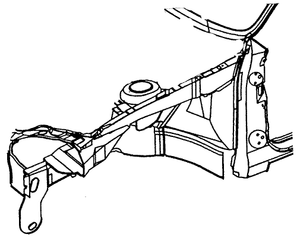

DELANTERO
PANEL DELANTERO
DESCRIPCIÓN GENERAL
El panel delantero está unido al alojamiento de rueda delantero y al longitudinal delantero. Forma la base para los faros delanteros y otras partes y mantiene la rigidez de la sección delantera de la carrocería. Preste particular atención a las desviaciones y paralelismos y compruebe el montaje de piezas relacionados en el momento de soldar.
PROCEDIMIENTO DE REPARACIÓN
- Retire las piezas relacionadas.
- Capó, rejilla del radiador y el parachoques delantero.
- Faros delanteros y guardabarros.
- Motor, radiador y piezas relacionadas.
- Condensador del aire acondicionado y piezas relacionadas.
- Otras.


- Extraiga completamente y enderece la zona dañada.
- Compruebe el daño al alojamiento de rueda delantero y al longitudinal delantero antes de retirar el panel delantero. Utilice el enderezador de bastidor para tirar de y reparar el panel delantero dañado antes de retirar dicho panel delantero.
Nota: Compruebe el ajuste de la puerta, teniendo cuidado de no sacar la zona dañada más de lo necesario.
- Use las pinzas de soldadura de contracción horizontal y sujete el vehículo al enderezador de bastidor en los puntos de fijación.
- Mantenga nivelada la carrocería.
- Eleve la carrocería mediante gatos, coloque los soportes de seguridad en los cuatro lugares designados para ello en la apertura de la puerta del bastidor.
- Corte y separe el panel delantero.
- Marque con punzón alrededor de las impresiones de la soldadura por puntos.
- Utilice un cortador de puntos de soldadura especial para taladrar orificios en los puntos de soldadura del alojamiento de rueda delantero y el longitudinal.
Nota: Cuando realice los taladros tenga cuidado de no perforar hasta los propios alojamiento de rueda delantero y el longitudinal.
- Corte el panel delantero con un escoplo neumático, dejando las bridas de soldadura intactas.
- Nivele y elimine la rebaba de los puntos de soldadura levantados con una lijadora de disco.
Precaución: Para evitar lesiones en los ojos, utilice guantes de seguridad siempre que lije, corte o amole.

- Piezas del moldeo dañadas relacionadas.
- Utilice un martillo y un sufridor para moldear las zonas dañadas del alojamiento de rueda delantera y el longitudinal.
- Alise las bridas de soldadura con un martillo y un sufridor.
- Rellene cualquier orificio realizado mediante la soldadura.
- Coloque el panel delantero.
- Amole ambos lados de la sección de soldadura del panel delantero con una lijadora para eliminar la pintura y dejar expuesto la plancha de acero.
Precaución: Para evitar lesiones en los ojos, utilice guantes de seguridad siempre que lije, corte o amole.
- Fije el lado derecho y el izquierdo con los alicates de sujeción tal como se muestra.
- Suelde las secciones fijadas para una instalación temporal.
Precaución: Para evitar lesiones en los ojos y quemaduras al soldar, utilice un casco de soldador adecuado, guantes y calzado de seguridad.

Nota: Asegúrese de que los paneles delanteros izquierdo y derecho están en línea entre sí.
- Mida en diagonal el compartimento delantero.
- Mida el compartimento delantero en diagonal con un calibre de líneas paralelas o una regla convexa tal como se ilustra para comprobar posibles pliegues o dobleces.
- Instale temporalmente el guardabarros, los faros delanteros y el capó, luego compruebe las distancias y equilibre las diferencias.

- Realice la soldadura principal.
- Realice la soldadura por puntos del panel delantero tal como se ilustra.
Precaución: Para evitar lesiones en los ojos y quemaduras al soldar, utilice un casco de soldador adecuado, guantes y calzado de seguridad.
- Realice, en primer lugar una soldadura de prueba y compruebe la condición de la misma.
- Aumente el número de puntos en un 20% para zonas en las que se realizará soldadura por puntos.
- Acabe las zonas de soldadura.
- Utilice un martillo y un sufridor para alisar el alojamiento de rueda delantera y las bridas longitudinales para un ajuste preciso con la superficie del panel delantero.
- Aplique la capa interior.
- Aplique revestimiento inferior a las zonas dañadas del alojamiento de rueda delantero y longitudinal si fuera necesario.
- Aplique la pintura.
- PRECAUCION
- Ventile la zona cuando pinte con pulverizador. La mayoría de las pinturas contienen sustancias perjudiciales si se inhalan o ingieren. Lea la etiqueta de la pintura antes de abrir el contenedor de la misma.
- Evite el contacto con la piel. Cuando pinte use un respirador adecuado, guantes, protección ocular y una ropa adecuada para el trabajo.
- La pintura es inflamable. Guárdela en un lugar seguro y manténgala alejada de chispas, llamas o cigarrillos.
- Aplicación de agentes anticorrosivos.
- Aplicación de agentes anticorrosivos al extremo del lateral del panel delantero y las zonas de bisagra de la puerta.

- Instale las piezas relacionadas.
- Motor, radiador y piezas relacionadas.
- Condensador del aire acondicionado y piezas relacionadas.
- Faros delanteros y guardabarros.
- Capó, rejilla del radiador y el parachoques.
- Otras
- Instale las piezas en el orden inverso al que se retiraron.
Nota: Después de instalar todas las piezas relacionadas, frote con grasa las piezas móviles y rellene el líquido refrigerante, aceite, el gas del aire acondicionado y otros.
- Comprobar y ajustar
- Compruebe las distancias y equilibre las diferencias.
- Compruebe el estado de bloqueo y desbloqueo del capó.
- Ajuste el haz del faro delantero.
- Compruebe el funcionamiento completo.
- Compruebe posibles fugas de gasolina, aceite y otros líquidos.
Nota: Use la hoja de comprobación especificada para la comprobación adecuada del funcionamiento.
ALOJAMIENTO DE RUEDA DELANTERO
DESCRIPCIÓN GENERAL
El componente del alojamiento de rueda delantero está construido como una unidad con el amortiguador del indicador de posición. Por ello, la sustitución del componente afecta a la alineación de la rueda delantera. Cuando la monte utilice bien una plantilla o siga las dimensiones que encontrará en la tabla de reparación de la carrocería para la colocación. Debe soldarse con cuidado.
PROCEDIMIENTO DE REPARACIÓN
- Retire las piezas relacionadas.
- Piezas del lado del pasajero del panel inferior del salpicadero que son especialmente inflamables.
- Tablero de instrumentos, cableado de conexión, piezas relacionadas y otras.
- Extraiga completamente y enderece las zonas dañadas hasta lograr aproximadamente la forma original.
- Coloque el coche en el enderezador de bastidor fijando las pinzas del chasis inferior en los puntos de soldadura de contracción horizontal.
- Antes de cortar las secciones dañadas, tire de ellas de forma que recuperen la forma original.
- No tire más de lo necesario.
- Tire y enderece las zonas dañadas del alojamiento de rueda trasero y el panel del salpicadero inferior, pilar delantero y otras piezas.
Nota: Compruebe el estado de la puerta y las bisagras.

- Retire el soporte del alojamiento de rueda.
- Marque con punzón alrededor de las impresiones de la soldadura por puntos.
- Utilice un cortador de puntos de soldadura especial para taladrar orificios en los puntos de soldadura del soporte del alojamiento de rueda.
- Elimine las zonas de soldadura MIG con una lijadora de disco.
Precaución: Para evitar lesiones en los ojos, utilice guantes de seguridad siempre que lije, corte o amole.

- Utilizando un escoplo, levante la brida soldada del tirador de la carrocería delantero y del alojamiento de rueda.
- Pele la capa interior y el sellador.
- Aplique calor a la capa interior y al sellador en las zonas de soldadura del alojamiento de rueda y longitudinal con un soplete de gas y pele la capa interior y el sellador con una espátula de acero.
- Corte y separe el alojamiento de rueda delantero.
- Marque con punzón alrededor de las impresiones de la soldadura por puntos en el longitudinal y el alojamiento de rueda trasero.
- Utilice un cortador de puntos de soldadura especial para taladrar orificios en los puntos de soldadura en las zonas de punzonado.
- Corte el alojamiento de rueda delantero con un escoplo neumático, dejando las bridas de soldadura intactas.
- Nivele y elimine la rebaba de los puntos de soldadura levantados con una lijadora de disco.
Precaución: Para evitar lesiones en los ojos, utilice guantes de seguridad siempre que lije, corte o amole.

- NOTA :
- Si el daño se produjo únicamente en la parte delantera, corte la sección dañada del alojamiento de rueda delantero, recorte el nuevo panel para que se ajuste a la sección restante, luego realice una soldadura a tope de ambas partes en los extremos interiores.
- Piezas del moldeo dañadas relacionadas.
- Rellene cualquier orificio realizado mediante la soldadura.
- Utilice un martillo y un sufridor para moldear las zonas dañadas del longitudinal delantero, el alojamiento de rueda trasero y otros paneles.
- Alise las bridas de soldadura con un martillo y un sufridor.
- Coloque el nuevo panel del alojamiento de rueda delantero.
- Amole ambos lados de la sección de soldadura del alojamiento de rueda delantero y trasero y del longitudinal delantero con una lijadora de disco para eliminar la pintura y dejar expuesto la plancha de acero.
Precaución: Para evitar lesiones en los ojos, utilice guantes de seguridad siempre que lije, corte o amole.
- Fije al longitudinal delantero con los alicates de sujeción y mordazas.
- Fije el panel delantero con mordaza de sujeción.
Nota: Se recomienda el uso de plantillas.
- Suelde las secciones fijadas para una instalación temporal.
Precaución: Para evitar lesiones en los ojos y quemaduras al soldar, utilice un casco de soldador adecuado, guantes y calzado de seguridad.
- Mida en diagonal el compartimento delantero.
- Mida el compartimento delantero en diagonal con un calibre de líneas paralelas o una regla convexa para comprobar posibles pliegues o dobleces.
- Instale temporalmente el guardabarros y el capó, luego compruebe las distancias y equilibre las diferencias.
- Realice la soldadura principal.
- Suelde todo lo que sea posible con la plantilla colocada.
- Realice, en primer lugar una soldadura de prueba y compruebe la condición de la misma.
- Realice la soldadura.

Precaución: Para evitar lesiones en los ojos y quemaduras al soldar, utilice un casco de soldador adecuado, guantes y calzado de seguridad.
- Aumente el número de puntos en un 20% para zonas en las que se realizará soldadura por puntos.
- Aplique la cinta selladora.
- Aplique la cinta selladora a la bisagra y a la zona de contacto del soporte del alojamiento de rueda, tal como se muestra.

- Suelde el soporte del alojamiento de rueda.
- Suelde por puntos el soporte del alojamiento de rueda tal como se muestra.
- Realice soldaduras MIG o con gas en las zonas de bisagra de la puerta.
- Acabe las zonas de soldadura.
- Utilice un martillo y un sufridor para alisar el alojamiento de rueda trasera y las bridas longitudinales delantera para un ajuste preciso con la superficie del alojamiento de rueda delantero.
- Aplique el sellador.
- Aplique sellador a las superficies de contacto y solapamiento.
- Aplique la capa interior.
- Aplique revestimiento inferior del alojamiento de rueda delantero, trasero y longitudinal.
- Aplique la pintura.
- PRECAUCION
- Ventile la zona cuando pinte con pulverizador. La mayoría de las pinturas contienen sustancias perjudiciales si se inhalan o ingieren. Lea la etiqueta de la pintura antes de abrir el contenedor de la misma.
- Evite el contacto con la piel. Cuando pinte use un respirador adecuado, guantes, protección ocular y una ropa adecuada para el trabajo.
- La pintura es inflamable. Guárdela en un lugar seguro y manténgala alejada de chispas, llamas o cigarrillos.
- Aplicación de agentes anticorrosivos.
- Aplicación de agentes anticorrosivos al extremo del lateral del panel delantero y las zonas de bisagra de la puerta.
- Instale las piezas relacionadas.
- Cable de conexión, tablero de instrumentos y piezas relacionadas.
- Piezas del compartimento de pasajero.
- Piezas a instalar cuando se instala el panel delantero.
- Otras.
- Instale las piezas en el orden inverso al que se retiraron.
Nota: Después de instalar todas las piezas relacionadas, frote con grasa las piezas móviles y rellene el líquido refrigerante, aceite, el gas del aire acondicionado y otros.
- Comprobar y ajustar
- Mida la alineación de la rueda delantera.
- Compruebe las distancias y equilibre las diferencias.
- Compruebe el estado de bloqueo y desbloqueo del capó.
- Ajuste el haz del faro delantero.
- Compruebe el funcionamiento completo.
- Compruebe posibles fugas de gasolina, aceite y otros líquidos.
Nota: Use la hoja de comprobación especificada para la comprobación adecuada del funcionamiento.
LONGITUDINAL DELANTERO
DESCRIPCIÓN GENERAL
El longitudinal delantero está unido al alojamiento de rueda y al panel delantero y forma la base para la suspensión delantera, el motor, la transmisión y otros sistemas. Por ello, la sustitución del componente afecta a la alineación de la rueda delantera y mantiene la rigidez de la sección delantera. Cuando la monte utilice bien una plantilla o siga las dimensiones que encontrará en la tabla de reparación de la carrocería para la colocación. Debe soldarse con cuidado.
PROCEDIMIENTO DE REPARACIÓN
- Retire las piezas relacionadas.
- Piezas a retirar cuando se retire el panel delantero y el alojamiento de rueda delantero.
- Piezas del lado del pasajero del panel inferior del salpicadero que son especialmente inflamables.
- Tablero de instrumentos, cableado de conexión, piezas relacionadas y otras.
Nota: Retire de acuerdo con las piezas dañadas que encuentre.
- Extraiga completamente y enderece las zonas dañadas hasta lograr aproximadamente la forma original.
- Coloque el coche en el enderezador de bastidor fijando las pinzas del chasis inferior en los puntos de soldadura de contracción horizontal.
- Antes de cortar las secciones dañadas, tire de ellas de forma que recuperen la forma original.
- Corte el longitudinal delantero de acuerdo con la extensión del daño antes de tirar, lo que hace que la reparación de las piezas relacionadas sea difícil.
- No tire más de lo necesario.
Nota: Compruebe el estado de la puerta y las bisagras.
- Pele la capa interior y el sellador.
- Aplique calor a la capa interior y al sellador en las zonas de soldadura de las piezas dañadas con un soplete de gas y pele la capa interior y el sellador con una espátula de acero.
Precaución: Tenga cuidado de no quemar los herrajes del interior del compartimento de pasajero al calentar.
- Corte y separe el longitudinal delantero.
Nota: No es necesario separar el alojamiento de rueda delantero del longitudinal delantero si también debe sustituir aquel.
- Marque con punzón alrededor de las impresiones de la soldadura por puntos en el alojamiento de rueda y otras piezas relacionadas.
- Utilice un cortador de puntos de soldadura especial para taladrar orificios en los puntos de soldadura en las zonas de punzonado.
- Corte el longitudinal delantero con un escoplo neumático, dejando las bridas de soldadura intactas.
- Nivele y elimine la rebaba de los puntos de soldadura levantados con una lijadora de disco.
Precaución: Para evitar lesiones en los ojos, utilice guantes de seguridad siempre que lije, corte o amole.

- Piezas del moldeo dañadas relacionadas.
- Rellene cualquier orificio realizado mediante la soldadura.
Precaución: Para evitar lesiones en los ojos y quemaduras al soldar, utilice un casco de soldador adecuado, guantes y calzado de seguridad.
- Vuelva a conformar el alojamiento de rueda y otras piezas dañadas y alise las bridas de soldadura con un martillo y un sufridor.

- Corte el nuevo longitudinal delantero para alinearlo con la carrocería, luego coloque el alojamiento de rueda y el panel delantero.
- Corte el nuevo longitudinal delantero con una sierra de mano siendo luego soldado a tope.
- Amole ambos lados de la sección de soldadura del alojamiento de rueda y longitudinal delantero con una lijadora de disco para eliminar la pintura y dejar expuesto la plancha de acero.
Precaución: Para evitar lesiones en los ojos, utilice guantes de seguridad siempre que lije, corte o amole.
- Apriete el nuevo longitudinal delantero contra las piezas restantes con los alicates de sujeción y los alicates de presión.
- Coloque un gato bajo el extremo del longitudinal delantero y apóyelo, midiendo las posiciones para su ajuste correcto.
- Ajuste y fije el panel delantero en su lugar con la mordaza de sujeción.
Nota: Se recomienda el uso de plantillas para la colocación correcta y compruebe que tanto el longitudinal delantero como el alojamiento de rueda son paralelos.
- Suelde por puntos la sección embridada para una instalación temporal.
- Realice la soldadura principal.
- Suelde todo lo que sea posible con la plantilla colocada.
- Realice soldaduras MIG o con gas en las uniones a tope del longitudinal delantero, con cuidado.
- Suelde por puntos el alojamiento de rueda con las zonas de brida del longitudinal delantero y el panel delantero.
Precaución: Para evitar lesiones en los ojos y quemaduras al soldar, utilice un casco de soldador adecuado, guantes y calzado de seguridad.
- Realice, en primer lugar una soldadura de prueba y compruebe la condición de la misma.
- Aumente el número de puntos en un 20% para zonas en las que se realizará soldadura por puntos.
- Nivele los cordones de soldadura en las zonas de las uniones a tope del longitudinal con una lijadora de disco.
- Realice el contrafuerte (Grosor: 2,8mm Ancho Mín.: 80mm) de acuerdo con la forma de las zonas de unión a tope de la longitudinal y suelde el contrafuerte en las zonas de unión a tope del longitudinal con el soldador MIG.
- Acabe las zonas de soldadura.
- Nivele las zonas de soldadura con gas o MIG con la lijadora de disco.
- Utilice un martillo y un sufridor para alisar el alojamiento de rueda y las bridas longitudinales para un ajuste preciso.
- Aplique el sellador.
- Aplique el sellador a las zonas de unión del panel del salpicadero inferior y las zonas del panel de suelo.
- Aplique la capa interior.
- Aplique revestimiento inferior y las zonas de solapamiento del piso delantero, chasis inferior del longitudinal y el interior del alojamiento de rueda delantero y trasero.
- Aplique la pintura.
- PRECAUCION
- Ventile la zona cuando pinte con pulverizador. La mayoría de las pinturas contienen sustancias perjudiciales si se inhalan o ingieren. Lea la etiqueta de la pintura antes de abrir el contenedor de la misma.
- Evite el contacto con la piel. Cuando pinte use un respirador adecuado, guantes, protección ocular y una ropa adecuada para el trabajo.
- La pintura es inflamable. Guárdela en un lugar seguro y manténgala alejada de chispas, llamas o cigarrillos.
- Aplicación de agentes anticorrosivos.
- Aplicación de agentes anticorrosivos al extremo del lateral del panel delantero y las zonas de bisagra de la puerta delantera.
- Instale las piezas relacionadas.
- Limpie el compartimento de pasajero.
- Cable de conexión, tablero de instrumentos y piezas relacionadas.
- Piezas del compartimento de pasajero.
- Componentes del chasis.
- Motor, radiador y piezas relacionadas.
- Condensador del aire acondicionado y piezas relacionadas.
- Faros delanteros y guardabarros.
- Capó, rejilla del radiador y parachoques.
- Otras.
- Instale las piezas en el orden inverso al que se retiraron.
Nota: Después de instalar todas las piezas relacionadas, frote con grasa las piezas móviles y rellene el líquido refrigerante, aceite, el gas del aire acondicionado y otros.
- Comprobar y ajustar
- Compruebe las distancias y equilibre las diferencias.
- Compruebe el estado de bloqueo y desbloqueo del capó.
- Ajuste el haz del faro delantero.
- Compruebe el funcionamiento completo.
- Compruebe posibles fugas de gasolina, aceite y otros líquidos.
- Compruebe posibles fugas de agua en el compartimento de pasajero.
Nota: Use la hoja de comprobación especificada para la comprobación adecuada del funcionamiento.
PILAR DELANTERO
DESCRIPCIÓN GENERAL
La zona del pilar delantero es parte del panel de apertura de puerta del bastidor. Está conectado al techo, el parabrisas, las bisagras de la puerta y el bastidor de piso y es importante como soporte para el lado delantero de la cabina. La conexión del pilar delantero determina la posición del parabrisas y puerta delantera. Alinee el guardabarros, la puerta y el parabrisas mientras el pilar delantero se monta de forma temporal y compruebe las distancias de seguridad nivelando las diferencias.
PROCEDIMIENTO DE REPARACIÓN
- Retire las piezas relacionadas.
- Capó, rejilla del radiador y el parachoques delantero.
- Puerta y guardabarros.
- Limpiaparabrisas, capó y parabrisas.
- Burlete y tapizados del pilar.
- Tablero de instrumentos y cable de conexión.
- Alfombra y otros.
- Extraiga completamente y enderece la zona dañada.
- Compruebe el daño al alojamiento de rueda y el techo antes de retirar el soporte del alojamiento de rueda y el pilar delantero y determine la extensión del daño.
- Use el enderezador de bastidor para tirar de y reparar el pilar delantero dañado antes de retirar el soporte del alojamiento de rueda y panel delantero.
Nota: Tire hasta que el pilar se alinee con la superficie del parabrisas y no tire más de lo necesario.

- Retire el soporte del alojamiento de rueda.
- Marque con punzón alrededor de las impresiones de la soldadura por puntos.
- Utilice un cortador de puntos de soldadura especial para taladrar orificios en los puntos de soldadura del soporte del alojamiento de rueda.
- Elimine las zonas de soldadura MIG con una lijadora de disco.
Precaución: Para evitar lesiones en los ojos, utilice guantes de seguridad siempre que lije, corte o amole.
- Utilizando un escoplo, levante la brida soldada del pilar de la carrocería delantero y del alojamiento de rueda.
- Pele la capa interior y el sellador.
- Aplique calor a la capa interior y al sellador en las zonas de soldadura del alojamiento de rueda y longitudinal con un soplete de gas y pele la capa interior y el sellador con una espátula de acero.
- Corte y separe el pilar delantero.
- Corte con cuidado el pilar frontal por las líneas gruesas tal como se muestra en la siguiente figura con una sierra manual y cizallas de plancha.
Nota: Tenga cuidado de no cortar la sección interior.

- Marque con punzón alrededor de las impresiones de la soldadura por puntos en el alojamiento de rueda trasero, el interior del pilar delantero de la carrocería, interior del pilar delantero de refuerzo y lado del panel de piso.
- Utilice un cortador de puntos de soldadura especial para taladrar orificios en los puntos de soldadura del pilar delantero.
Nota: Cuando realice los taladros tenga cuidado de no perforar hasta el propio interior del pilar delantero de la carrocería, el interior del pilar delantero de la carrocería de refuerzo y del lado del panel del piso.
- Levante las bridas restantes de la carrocería con un escoplo neumático y dejando las bridas de soldadura.
- Nivele y elimine la rebaba de los puntos de soldadura levantados con un martillo, un sufridor y una lijadora de disco.
Precaución: Para evitar lesiones en los ojos, utilice guantes de seguridad siempre que lije, corte o amole.
- Piezas del moldeo dañadas relacionadas.
- Rellene cualquier orificio realizado mediante la soldadura.
Precaución: Para evitar lesiones en los ojos y quemaduras al soldar, utilice un casco de soldador adecuado, guantes y calzado de seguridad.
- Utilice un martillo y un sufridor para moldear las zonas dañadas del panel interior restante y alise las bridas de soldadura.
- Coloque el nuevo pilar delantero.
- Alinee la nueva pieza con la sección superior, luego córtela con una sierra manual.
- Corte la zona de unión lateral del panel de piso, de forma que se solape unos 30mm (1,18 pul.) en el lado del panel de piso con una sierra manual.
- Amole ambos lados de la sección de soldadura con una lijadora de disco para eliminar la pintura y dejar expuesta la plancha de acero.
- Fije el nuevo panel en su lugar con la mordaza de sujeción.
- Suelde por puntos la sección embridada para una instalación temporal.


Precaución: Para evitar lesiones en los ojos y quemaduras al soldar, utilice un casco de soldador adecuado, guantes y calzado de seguridad.
- Retire las mordazas de sujeción e instale temporalmente el guardabarros y las puertas, luego compruebe las distancias de seguridad, niveles las diferencias y el aspecto exterior.
- Realice la soldadura principal.
- Suelde la zona de apertura de puerta de bastidor y el pilar en las uniones a tope con un soldador de gas o MIG.
- Suelde por puntos las bridas del pilar delantero tal como se muestra.
Precaución: Para evitar lesiones en los ojos y quemaduras al soldar, utilice un casco de soldador adecuado, guantes y calzado de seguridad.
- Realice, en primer lugar una soldadura de prueba y compruebe la condición de la misma.
- Aumente el número de puntos en un 20% para zonas en las que se realizará soldadura por puntos.

- Acabe las zonas de soldadura.
- Nivele las zonas de soldadura con gas o MIG con la lijadora de disco, luego alise las zonas altas con un martillo, teniendo cuidado de no deformarlas.
Precaución: Para evitar lesiones en los ojos, utilice guantes de seguridad siempre que lije, corte o amole.
- Utilice un martillo y un sufridor para alisar las bridas de soldadura por puntos para un ajuste preciso con la superficie del panel interior.
- Llene las deformaciones y niveles las diferencias de las zonas soldadas con soldador o masilla, luego aplique el acabado.
- Aplique la cinta selladora.
- Aplique la cinta selladora a la bisagra y a la zona de contacto del soporte del alojamiento de rueda, tal como se muestra.

- Suelde el soporte del alojamiento de rueda.
- Suelde por puntos el soporte del alojamiento de rueda tal como se muestra.
- Realice soldaduras MIG o con gas en las zonas de bisagra de la puerta.
- Acabe las zonas de soldadura.
- Utilice un martillo y un sufridor para alisar el soporte del alojamiento de rueda para un ajuste preciso con la superficie del alojamiento de rueda.
- Aplique el sellador.
- Aplique sellador a las superficies de contacto y solapamiento.
- Aplique la capa interior.
- Aplique revestimiento inferior del alojamiento de rueda delantero, trasero y longitudinal.
- Aplique la pintura.
- PRECAUCION
- Ventile la zona cuando pinte con pulverizador. La mayoría de las pinturas contienen sustancias perjudiciales si se inhalan o ingieren. Lea la etiqueta de la pintura antes de abrir el contenedor de la misma.
- Evite el contacto con la piel. Cuando pinte use un respirador adecuado, guantes, protección ocular y una ropa adecuada para el trabajo.
- La pintura es inflamable. Guárdela en un lugar seguro y manténgala alejada de chispas, llamas o cigarrillos.
- Aplicación de agentes anticorrosivos.
- Aplicación de agentes anticorrosivos al extremo del lateral del panel delantero y las zonas de bisagra de la puerta.
- Instale las piezas relacionadas.
- Limpie el compartimento de pasajero.
- Parabrisas, capó y limpiaparabrisas.
- Cable de conexión, tablero de instrumentos y piezas relacionadas.
- Alfombra, tapizados y burlete.
- Puerta
- Guardabarros y capó.
- Rejilla del radiador, parachoques y otros.
- Instale las piezas en el orden inverso al que se retiraron.
- Comprobar y ajustar.
- Compruebe la correcta instalación y funcionamiento de la puerta.
- Compruebe las distancias y equilibre las diferencias.
- Compruebe el estado de bloqueo y desbloqueo del capó.
- Compruebe el funcionamiento completo.
- Compruebe posibles fugas de agua en el compartimento de pasajero.
Nota: Use la hoja de comprobación especificada para la comprobación adecuada del funcionamiento.